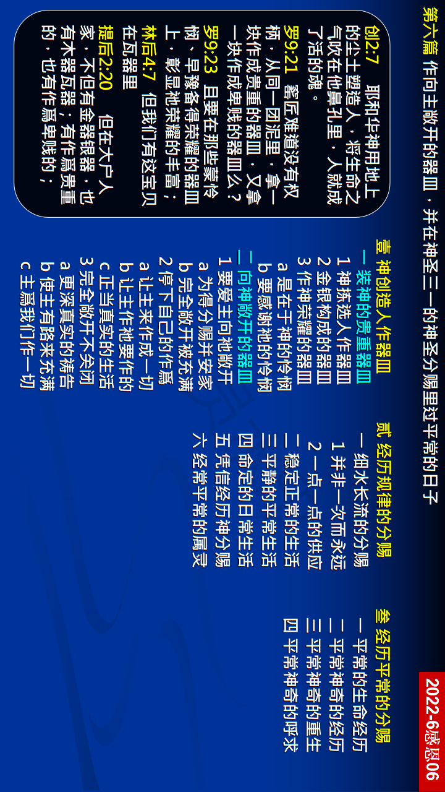

第六篇 作向主敞开的器皿，并在神圣三一的神圣分赐里过平常的日子
前言
本篇信息作为这次特会的顶石，乃是基于前 面的五篇信息。关于神圣的分赐，我们必须 有三方面的认识。首先，神圣的分赐乃是三 一神永远的福分。因此，神圣的分赐也是一 件永远的事。其次，神圣的分赐在我们的经历中，有两方面。一面是外在、客观的，另 一面是内里、主观的，正如同将食物接受进 来后，胃就开始消化、吸收，以至于应用到 我们的细胞与纤维里。末了，神的目标乃是 要带我们经过生命的变化而达到成熟。为这 缘故，我们就需要作一向主敞开的器皿。
真理要点(鸟瞰)
壹 人作器皿盛装神：①神的拣选的目的②保罗书信的表达
贰 规律正常的经历：①一点一点的接受②过稳定正常生活③神圣平静的分赐 ④领悟我们的定命⑤凭信经历神分赐⑥经常平常的属灵
叁 是神奇的平常事：①平常的生命经历②平常却是神奇的③神奇平常的重生 ④神奇平常的呼求
经历应用(操练)
我们既有那灵在我们里面作印记、且作凭质、豫尝，我们就当天天早晨醒来之后，花十到十五分钟，打开主的话，逐章逐节的读两三节，也不需要大喊大叫。当然应当呼求主，就像呼吸一样。我们不必太去注意寻求感觉， 只要平静而平常的祷告并祷读几节圣经。你天天如此行， 常常与主交通，凡是使你感觉不安的事，就不去作；凡是你里面觉得妥贴的，是主喜欢的，你就去作。一有聚会，一定来参加，在聚会中，也不必太高兴，站起来大喊大叫，有话就平静的说，安安静静的作见证。如果我们一直过这种平稳的生活，我们铁定是一个健康的基督徒，我们一定会在里面享受父神将祂儿子的生命和祂神 圣的性情不断的灌输并分赐到我们里面。
负担
启示录里的七封书信。头一封是写给以弗所召会的，主 说，他们为祂作了许多事情，却失去了起初的爱。他们 有许许多多的活动，然而主不宝贝这些活动。他们把主 所惟一宝贝的─他们起初的爱─失去了。第四封书信是写 给推雅推喇召会的，主也表明祂知道他们的行为、爱、 信、服事、忍耐。他们有太多的作为！你必须领悟，甚 么时候你有太多的作为，偶像就在那里。在七个召会当 中，推雅推喇的偶像最多，因为她的作为最多。最后一 封书信是写给老底嘉召会的，主说他们是温水。新约启 示我们，神要一个爱祂、把自己向祂敞开的器皿。我们 的拯救在这里，祕诀也在这里。
